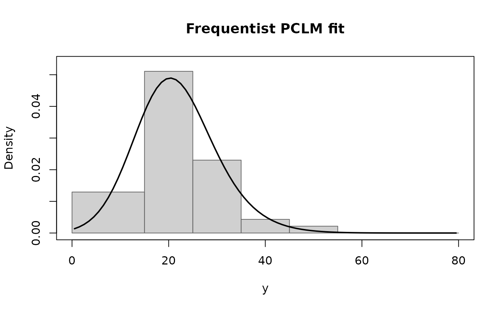
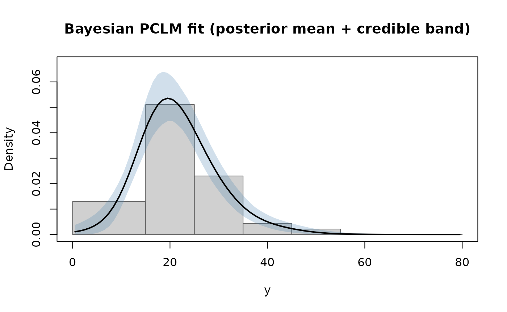
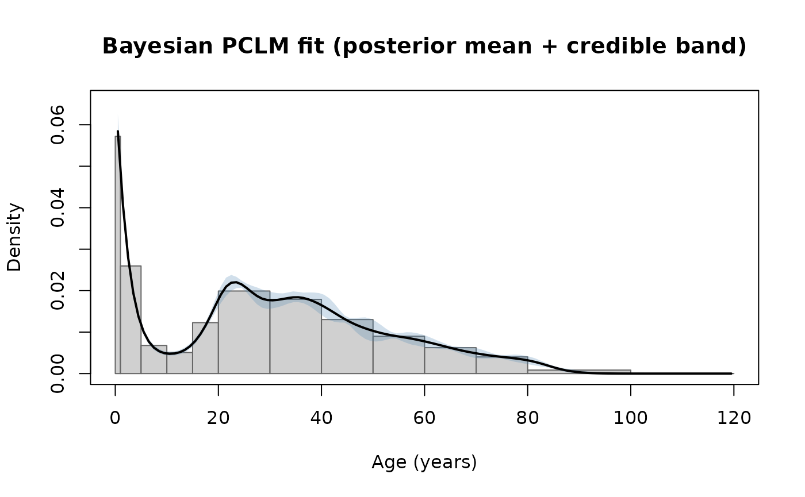
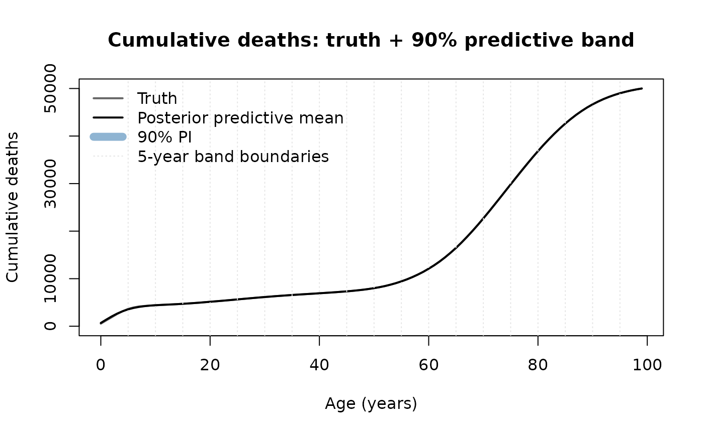

Bayesian density estimation and exact ungrouping with pclmbayes
pclmbayes authors
2026-05-07
Source:vignettes/pclmbayes-intro.Rmd
pclmbayes-intro.RmdOverview
The pclmbayes package estimates a smooth latent continuous density from data that have only been observed in wide bins. Two paradigms are supported and they answer two different questions.
- Density estimation (the original paradigm of Lambert and Eilers, 2009). The wide-bin counts are treated as a multinomial sample of an underlying smooth density, which is recovered with the composite-link spline model. The fitted bin counts are not constrained to match the observed bin counts exactly — the smoothness penalty is allowed to shrink them.
- Exact ungrouping (the use case for distributing wide-bin counts across a fine grid — for example, redistributing deaths in 5-year age bands across single years of age). The wide-bin counts are treated as fixed totals and the fine-grid counts must sum back to them exactly.
The package provides functions for both. The decision tree is:
-
pclm()— frequentist density estimation (BIC-selected smoothing). -
bpclm()— Bayesian density estimation with shape constraints (unimodal, log-concave, monotonic) and full posterior uncertainty. -
pclm_exact()— frequentist constrained MAP that gives the smoothest density consistent with the observed bin totals exactly. -
calibrate()— post-hoc projection of any fit (frequentist or Bayesian) onto the constraint manifold (exact bin totals). -
posterior_predict()— credible/prediction intervals for fine-cell counts, with multinomial sampling noise included where appropriate.
Part 1 — Density estimation (Lambert & Eilers paradigm)
The bloodlead example (paper, §6.1)
Seven wide bins of blood lead concentration in young Puerto Rican children in 1974 (Hasselblad et al. 1980, reproduced verbatim in Lambert and Eilers 2009).
data(bloodlead)
bloodlead
#> lower upper count
#> 1 0 15 27
#> 2 15 25 71
#> 3 25 35 32
#> 4 35 45 6
#> 5 45 55 3
#> 6 55 65 0
#> 7 65 80 0Frequentist fit
fit_f <- pclm(
m = bloodlead$count,
wide_breaks = with(bloodlead, cbind(lower, upper)),
a = 0, b = 80,
ngrid = 80L,
ndx = 17L, degree = 3L,
penalty_order = 3L,
select = "BIC"
)
fit_f
#> Penalised composite link model (frequentist)
#> Call: pclm(m = bloodlead$count, wide_breaks = with(bloodlead, cbind(lower,
#> upper)), a = 0, b = 80, ngrid = 80L, ndx = 17L, degree = 3L,
#> penalty_order = 3L, select = "BIC")
#>
#> Number of wide bins: 7 | total counts: 139
#> Fine grid:80intervals on (0, 80)
#> B-spline basis: K = 20 (degree = 3 )
#> Penalty order r = 3
#> Selected tau = 100 (BIC = 355.79, edf = 2.56)
#> Converged = TRUE in 13 iterations. log-likelihood = -171.582
plot(fit_f)
Frequentist (BIC-smoothed) PCLM fit to the bloodlead data.
Bayesian fit with unimodality constraint
fit_b <- bpclm(
m = bloodlead$count,
wide_breaks = with(bloodlead, cbind(lower, upper)),
a = 0, b = 80,
ngrid = 80L,
ndx = 17L, degree = 3L,
penalty_order = 3L,
niter = 5000L, burnin = 1000L, adapt = 500L,
shape = "unimodal",
seed = 1
)
fit_b
#> Bayesian penalised composite link model
#> Call: bpclm(m = bloodlead$count, wide_breaks = with(bloodlead, cbind(lower,
#> upper)), a = 0, b = 80, ngrid = 80L, ndx = 17L, degree = 3L,
#> penalty_order = 3L, niter = 5000L, burnin = 1000L, adapt = 500L,
#> shape = "unimodal", seed = 1)
#>
#> Number of wide bins: 7 | total counts: 139
#> Fine grid:80intervals on (0, 80)
#> B-spline basis: K = 20 (degree = 3 )
#> Penalty order r = 3
#> MCMC: niter = 5000, burnin = 1000, thin = 1, kept = 4000
#> Final delta = 1.09 | acceptance rate = 0.63
#> Shape constraint(s): unimodal
#> Posterior mean tau = 35.7 (sd 59)
plot(fit_b)
Bayesian PCLM fit with unimodality constraint and 90% credible band.
Posterior summaries
The paper (§6.1, p. 1395) reports posterior mean and 90% credible interval for the proportion above the 30 µg/dl risk threshold, the mean, the standard deviation, and selected quantiles. We can reproduce them from our chain:
prob_above_30 <- apply(fit_b$pi_chain, 1L, function(p) {
1 - approx(x = fit_b$grid, y = c(0, cumsum(p)),
xout = 30, rule = 2)$y
})
c(mean = mean(prob_above_30),
lower = quantile(prob_above_30, 0.05, names = FALSE),
upper = quantile(prob_above_30, 0.95, names = FALSE))
#> mean lower upper
#> 0.1495731 0.1067085 0.2005131
summary(fit_b, probs = c(0.20, 0.80))
#> Bayesian penalised composite link model
#> Call: bpclm(m = bloodlead$count, wide_breaks = with(bloodlead, cbind(lower,
#> upper)), a = 0, b = 80, ngrid = 80L, ndx = 17L, degree = 3L,
#> penalty_order = 3L, niter = 5000L, burnin = 1000L, adapt = 500L,
#> shape = "unimodal", seed = 1)
#>
#> Number of wide bins: 7 | total counts: 139
#> Fine grid:80intervals on (0, 80)
#> B-spline basis: K = 20 (degree = 3 )
#> Penalty order r = 3
#> MCMC: niter = 5000, burnin = 1000, thin = 1, kept = 4000
#> Final delta = 1.09 | acceptance rate = 0.63
#> Shape constraint(s): unimodal
#> Posterior mean tau = 35.7 (sd 59)
#>
#> Posterior of mean(Y): 21.7826 (90% CI: 20.5713, 23.0281)
#> Posterior of sd(Y): 8.2662 (90% CI: 7.2525, 9.3988)
#>
#> Posterior summaries of quantiles (mean and 90% CI):
#> p mean lo hi
#> 0.2 14.9881 13.5971 16.2548
#> 0.8 28.0798 26.3564 30.0208Shape constraints
bpclm() accepts shape = "unimodal",
"logconcave", or "monotonic", individually or
as a vector. The constraint is imposed via rejection inside the MCMC:
any proposed φ whose induced density violates the constraint is rejected
outright (Eq. 7 of the paper). For density estimation problems where the
underlying distribution is known to be unimodal — like the bloodlead
example — this stabilises the fit in the tails.
Reproducing other paper figures
The package ships the bloodlead dataset verbatim. The
tbdeaths1907 dataset is an illustrative
reconstruction of the historical CBS data used in §6.2 of Lambert
and Eilers (2009); see ?tbdeaths1907.
data(tbdeaths1907)
fit_tb <- bpclm(
m = tbdeaths1907$count,
wide_breaks = with(tbdeaths1907, cbind(lower, upper)),
a = 0, b = 120,
ngrid = 120L,
ndx = 17L, degree = 3L, penalty_order = 3L,
niter = 4000L, burnin = 1000L, adapt = 500L,
seed = 2
)
plot(fit_tb, xlab = "Age (years)")
Bayesian fit to the (illustrative) tbdeaths1907 data.
Part 2 — Exact ungrouping
Why the default fit doesn’t preserve bin totals
Under the Lambert–Eilers model the wide-bin counts are a multinomial sample of an underlying smooth density. The smoothness penalty shrinks the fitted bin probabilities away from the empirical proportions, so the implied counts deviate from the observed ones. On the bloodlead data the largest deviation is about 7.4 deaths (roughly a 10% shrinkage of the largest bin):
data.frame(
lower = bloodlead$lower,
upper = bloodlead$upper,
m_obs = bloodlead$count,
m_fit = round(fit_f$fitted_counts, 2L)
)
#> lower upper m_obs m_fit
#> 1 0 15 27 29.96
#> 2 15 25 71 63.63
#> 3 25 35 32 36.04
#> 4 35 45 6 8.12
#> 5 45 55 3 1.13
#> 6 55 65 0 0.11
#> 7 65 80 0 0.01For a density-estimation use case this is the correct behaviour — the count is a noisy realisation, and we are estimating the underlying rate. For an ungrouping use case (where the wide-bin counts are themselves the data — say, deaths in a 5-year age band — and we want a fine-grid breakdown that sums back exactly), this shrinkage is unwanted.
Two routes to exact preservation
calibrate() — post-hoc projection
Take any fit and rescale the within-bin density so exactly. The within-bin shape comes from the smooth fit; small kinks may appear at bin boundaries. Bayesian draws are calibrated one by one, so the constraint is enforced on every draw.
fit_f_cal <- calibrate(fit_f)
data.frame(
lower = bloodlead$lower,
upper = bloodlead$upper,
m_obs = bloodlead$count,
m_fit = fit_f_cal$fitted_counts
)
#> lower upper m_obs m_fit
#> 1 0 15 27 27
#> 2 15 25 71 71
#> 3 25 35 32 32
#> 4 35 45 6 6
#> 5 45 55 3 3
#> 6 55 65 0 0
#> 7 65 80 0 0
pclm_exact() — constrained MAP
Solve the constrained quadratic program returning the smoothest density on the fine grid that exactly reproduces the wide-bin counts. No kinks at boundaries.
fit_e <- pclm_exact(
m = bloodlead$count,
wide_breaks = with(bloodlead, cbind(lower, upper)),
a = 0, b = 80,
ngrid = 80L, ndx = 17L, degree = 3L, penalty_order = 3L
)
max(abs(fit_e$fitted_counts - fit_e$m)) # ~ 1e-13
#> [1] 7.105427e-15Single-year ungrouping demonstration
Group simulated single-year mortality counts into 5-year bands and ungroup back. This is the canonical use case in epidemiology and demography.
ages <- 0:99
true_p <- 0.10 * dnorm(ages, mean = 2, sd = 3) +
0.06 * dnorm(ages, mean = 25, sd = 12) +
0.84 * dnorm(ages, mean = 75, sd = 12)
true_p <- true_p / sum(true_p)
N <- 50000L
set.seed(42)
true_yearly <- as.numeric(rmultinom(1, size = N, prob = true_p))
year_to_band <- (ages %/% 5L) + 1L
m_band <- as.numeric(tapply(true_yearly, year_to_band, sum))
wb <- cbind(seq(0, 95, by = 5), seq(5, 100, by = 5))
fit_pe <- pclm_exact(m = m_band, wide_breaks = wb,
a = 0, b = 100, ngrid = 100L,
ndx = 22L, degree = 3L, penalty_order = 3L)
yhat <- fit_pe$pi * sum(m_band)
sqrt(mean((yhat - true_yearly) ^ 2)) # RMSE per single year
#> [1] 18.90452
max(abs(fit_pe$fitted_counts - m_band)) # exact preservation
#> [1] 9.094947e-13The RMSE per year sits close to the irreducible
multinomial-within-band sampling SD
(
for a 2500-death band). See the validation script in
dev/validate-ungrouping.R for a Monte Carlo coverage
check.
Part 3 — Uncertainty for ungrouping
(posterior_predict())
pclm_exact() is a deterministic point estimate — it has
no uncertainty by itself. Combining bpclm() with
calibrate() gives a chain of densities that all preserve
the bin totals exactly. The helper posterior_predict() then
turns the chain into per-cell credible/prediction intervals.
Two distinct uncertainty objects are supported:
-
type = "rate"— uncertainty about the smooth latent rate . Narrow at large . Use this when you want to compare rates across populations. -
type = "predictive"(default) — uncertainty about the realised per-cell counts. Within each band the conditional distribution is multinomial of size with within-band probabilities . Use this when you want plausible breakdowns of the observed band counts.
fit_b <- bpclm(m = m_band, wide_breaks = wb,
a = 0, b = 100, ngrid = 100L,
ndx = 22L, degree = 3L, penalty_order = 3L,
niter = 4000L, burnin = 1000L, adapt = 500L,
seed = 7)
fit_b <- calibrate(fit_b) # exact band totals on every draw
pp_predictive <- posterior_predict(fit_b, type = "predictive",
level = 0.9, seed = 7)
pp_rate <- posterior_predict(fit_b, type = "rate",
level = 0.9)```{r posterior-predict-plot, fig.width = 8, fig.height = 4.5, fig.cap = “Posterior predictive (left) and rate (right) for single-year deaths.”} op <- par(mfrow = c(1, 2), mar = c(4, 4, 2.5, 1)) plot(pp_predictive, show_bins = FALSE, main = “type = ‘predictive’ (90% PI)”, xlab = “Age (years)”, ylab = “Single-year deaths”) lines(ages, true_yearly, col = “firebrick”, lwd = 1.5, lty = 2)
plot(pp_rate, show_bins = FALSE, main = “type = ‘rate’ (90% CI)”, xlab = “Age (years)”, ylab = “Expected single-year deaths”) lines(ages, true_yearly, col = “firebrick”, lwd = 1.5, lty = 2) par(op)
The predictive interval (left) is wider because it includes the
multinomial sampling noise; it has approximately nominal coverage
(≈ 85% empirical at the 90% nominal level in our validation). The
rate interval (right) is much narrower because at $N = 50000$ the
smooth density is well-determined and the realised counts have
substantial sampling noise.
## Cumulative sums
Because the fine-cell draws preserve every band total exactly, any
cumulative sum at a band boundary is exactly known: the credible
band closes onto the truth at every multiple of 5. *Within* a band
the credible band has positive width, reflecting how the band's
counts could have been distributed across single years.
``` r
cdf_chain <- t(apply(pp_predictive$draws, 1L, cumsum))
cdf_mean <- colMeans(cdf_chain)
cdf_lo <- apply(cdf_chain, 2L, quantile, probs = 0.05, names = FALSE)
cdf_hi <- apply(cdf_chain, 2L, quantile, probs = 0.95, names = FALSE)
ymax_cdf <- max(cumsum(true_yearly), cdf_hi)
plot(ages, cumsum(true_yearly), type = "l", col = "grey40", lwd = 2,
ylim = c(0, ymax_cdf),
xlab = "Age (years)", ylab = "Cumulative deaths",
main = "Cumulative deaths: truth + 90% predictive band")
polygon(c(ages, rev(ages)), c(cdf_lo, rev(cdf_hi)),
col = grDevices::adjustcolor("steelblue", 0.3), border = NA)
lines(ages, cdf_mean, col = "black", lwd = 2)
abline(v = seq(5, 95, by = 5), col = "grey90", lty = 3)
legend("topleft",
legend = c("Truth", "Posterior predictive mean",
"90% PI", "5-year band boundaries"),
col = c("grey40", "black",
grDevices::adjustcolor("steelblue", 0.6), "grey90"),
lwd = c(2, 2, 8, 1), lty = c(1, 1, 1, 3), bty = "n")
Cumulative-deaths posterior predictive.
When to use which
| Goal | Function |
|---|---|
| Smooth density from sampled data, full Bayesian inference | bpclm() |
| Same, but with shape constraints (unimodal, log-concave, monotonic) | bpclm(..., shape = ...) |
| Smooth density from sampled data, fast point estimate | pclm() |
| Ungrouping: smoothest density that exactly preserves bin totals (point estimate) | pclm_exact() |
| Ungrouping with uncertainty: posterior chain that exactly preserves bin totals | bpclm() |
| Per-cell credible / prediction intervals for ungrouped counts | posterior_predict(fit, type = "predictive") |
| Per-cell credible interval for the smooth rate only | posterior_predict(fit, type = "rate") |
References
Lambert, P. and Eilers, P. H. C. (2009). Bayesian density estimation from grouped continuous data. Computational Statistics and Data Analysis, 53(4), 1388–1399. doi:10.1016/j.csda.2008.11.022
Eilers, P. H. C. and Marx, B. D. (1996). Flexible smoothing with B-splines and penalties. Statistical Science, 11(2), 89–121.
Hasselblad, V., Stead, A. G. and Galke, W. (1980). Analysis of coarsely grouped data from the lognormal distribution. Journal of the American Statistical Association, 75, 771–778.
Roberts, G. O. and Rosenthal, J. S. (1998). Optimal scaling of discrete approximations to Langevin diffusions. Journal of the Royal Statistical Society, Series B, 60(1), 255–268.
Atchadé, Y. F. and Rosenthal, J. S. (2005). On adaptive Markov chain Monte Carlo algorithms. Bernoulli, 11(5), 815–828.
Camarda, C. G., Eilers, P. H. C. and Pascariu, M. (2018). ungroup: An R package for efficient estimation of smooth distributions from coarsely binned data. Journal of Open Source Software, 3(29), 937.